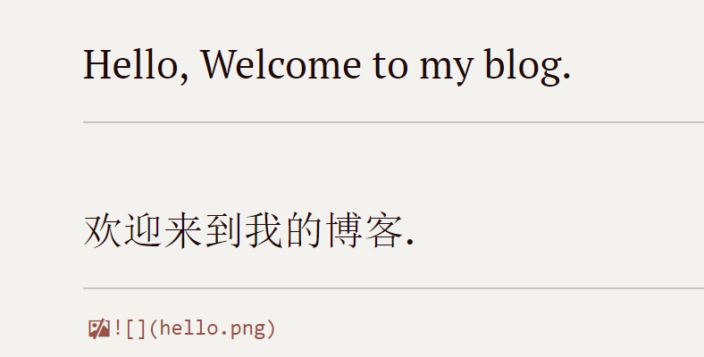

Hello, Welcome to my blog.
欢迎来到我的博客.


git clone
将github上的仓库克隆到本地磁盘并创建本地仓库
git pull
将远程远程仓库拉取到本地仓库
git add
将本地文件添加到缓存区
git commit -m
将缓存区内容提交到本地仓库（默认master分支）
1 | $ git commit -m "test001" |
git push -u origin
将本地仓库内容推送到远程仓库（origin当前git服务器地址）
1 | $ git push -u origin master |
git config –global user.name
设置全局用户名
git config –global user.email
设置全局邮箱
git init
初始化当前目录为一个本地仓库
1 | $ git init |
git remote add origin url
将创建的本地仓库与远程仓库进行关联
1 | $ git remote add origin https://github.com/shi-lt/test.git |
git branch
创建分支
1 | $ git branch test |
git log
查看提交记录
git branch
查看分支（此命令还可进行分支创建、重命名、删除）
git checkout
1 | $ git checkout test |
git mv
移动文件
git rm
删除文件
git merge
合并分支
未完待续。。。